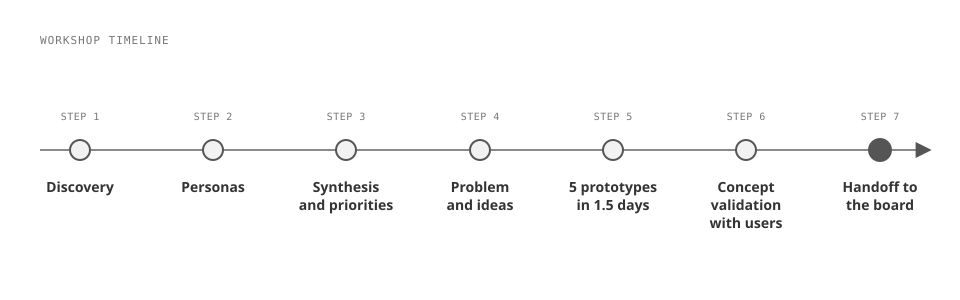
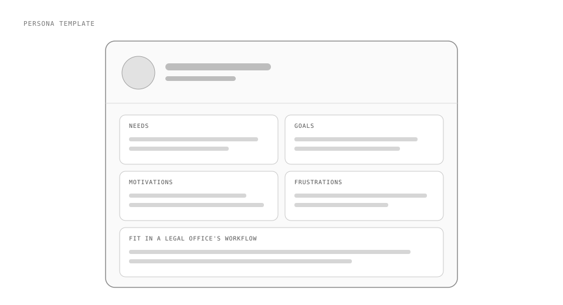
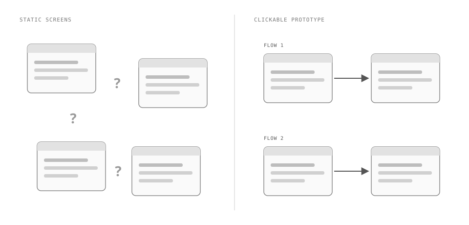
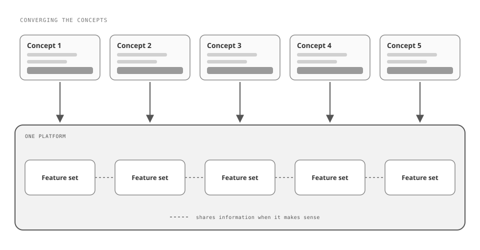

CS DISCO's AI chatbot wasn't getting used, the legal sector was changing fast around it, and its leadership had to show the board a plan to evolve and stand apart. In about 2 weeks, built around a week-long in-person workshop with DISCO's product leadership, we helped it pick its "big bet": we moved from discovery and personas to a prioritized problem worth solving, and as Senior Designer I turned the team's ideas and rough sketches into 5 clickable, mid-fidelity prototypes in a day and a half, in time to put them in front of real users on the final day. The best of those concepts converged into one new platform concept. DISCO's Chief Product Officer took our handoff to the board and secured additional funding, and DISCO is now building the concept in-house, with a marketing campaign already underway ahead of a 2027 release.

CS DISCO makes software for legal work, and its product leadership needed to define a "big bet": one initiative to help it innovate and disrupt the legal sector with AI over the next year.
On AI, DISCO was early. It had worked a chatbot into its existing product, but adoption was poor because users didn't find value in it. AI also played little part in how DISCO built products.
Meanwhile, the legal sector was evolving quickly around it, and DISCO had to show its board a plan for how it would evolve and set itself apart in the market. DISCO brought in SeeSaw Labs as an outside perspective, to help it pick a big bet that would move the needle in a meaningful way.
The project ran about 2 weeks: the in-person workshop week, plus a few days on either end. From SeeSaw Labs, I worked alongside another designer, a product manager, and our CEO. DISCO brought its Chief Product Officer, head of engineering, head of product design, a handful of PMs, and attorneys as subject-matter experts. My role was pure design and prototyping.
Each day of the workshop took on one topic, worked through together with DISCO's team:
- Discovery. We talked through the problem space and DISCO's users. Along the way we interviewed users, defined target audiences, and broke down their workflows.
- Personas. We built personas from those users and dug into their needs, goals, motivations, and frustrations, and how each fit into the workflow of a legal office.
- Synthesis. We pulled out areas of opportunity and began to prioritize them.
- Problem and ideas. We picked one problem, then ideated as a team on every way to solve it and why it was worth solving. That showed us the biggest pain points for the users who needed help the most.
From there, I translated the team's ideas and rough sketches into mid-fidelity prototypes: 5 of them in a day and a half (see Decisions 01 and 02). DISCO's team works heavily in Figma, so the designs lived there, and I used Claude Code to turn them into working, clickable prototypes. On the final day, we put the concepts in front of real users DISCO had lined up.
The hardest part was that timeline. Building that many prototypes in such a short turnaround meant pulling an all-nighter to finish the concepts, and it was a physical drain.
At the end, we packaged up the week's work and findings and handed it off, along with a hype video to warm DISCO's board members up to the big-bet pitch. The week also showed DISCO how much faster a project moves when AI is built into the process.


Prototyping inside the workshop week, not after it
Prototyping during the workshop was the plan from the start, even when concepting started later than we expected and squeezed the build into a day and a half.
Considered instead: designing after the workshop.
DISCO needed work it could see, so the team could align on the solution and on the story of the big bet. It also had to be ready for the final day: DISCO had set up interviews with real users, promising them new concepts to give feedback on, and we wanted that validation to show we were heading in the right direction.
Clickable prototypes in Claude Code instead of static Figma screens
I turned the Figma designs into working, clickable prototypes in Claude Code.
Considered instead: static Figma screens.
Each concept involved several flows, and shown as static screens, they would have been hard for the users we tested with to follow and understand what they were looking at at any given moment. Getting each concept into a working, clickable prototype cost a lot of time. We traded that time for clearer communication, both within our mixed SeeSaw Labs and DISCO team and with the users we tested with.

Converging the concepts instead of picking one
There wasn't a clean choice between concept A and concept B.
Considered instead: picking one of the prototyped concepts.
What worked best, or proved most valuable, was spread across the concepts. So the team took those pieces and worked out how to make them work together, and that became a completely new concept: a platform with more segmented feature sets that can still share information with each other when it makes sense to use what's in one feature in another.

"DISCO's board approved additional funding for the workshop's concept."
DISCO's Chief Product Officer presented our handoff deliverables to the board in a very successful meeting and secured approval for additional funding. DISCO is now building the concept in-house, and it's already well into a marketing campaign, commercials included, to build excitement ahead of a 2027 release.
There's no metric; the product hasn't released yet.